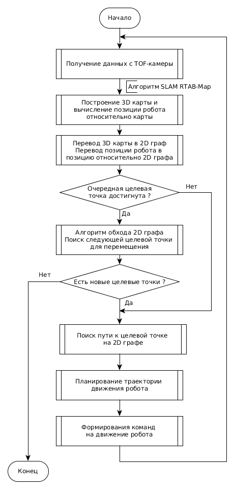
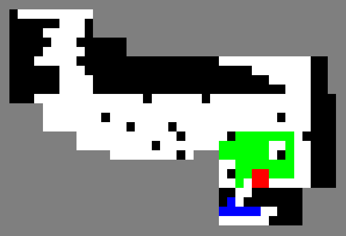
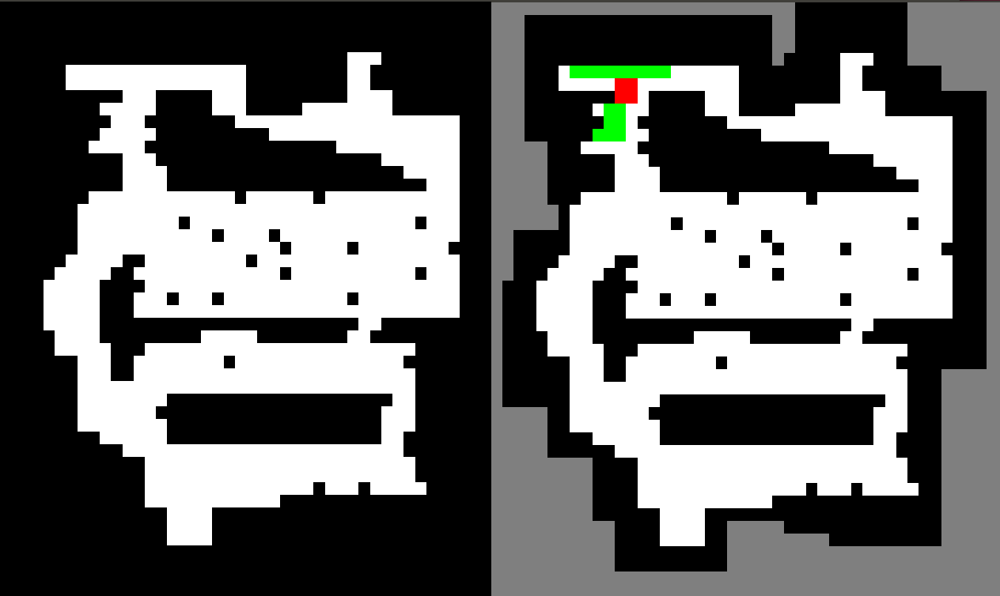
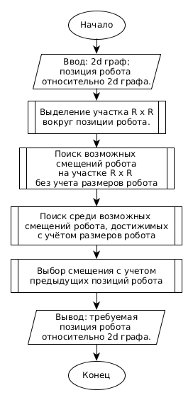

3 Алгоритмы навигации робота
Проблема навигации сервисного мобильного робота заключается в позиционировании его в пространстве при движении в динамической недетерминированной среде. В общем виде задачу навигации в помещении можно поставить следующим образом. Имеется некоторое помещение, в котором расположен мобильный робот, оснащенный сенсором, например, лазерным дальномером. Задана целевая точка, которую робот должен достичь для выполнения некоторой задачи. Необходимо определить закон управления мобильным роботом, который переведет его из начального положения в целевую точку. На первый взгляд, задача кажется простой, однако существует целый ряд проблем, условий и ограничений.
1. Робот должен определять свое положение в пространстве, чтобы позиционироваться относительно целевой точки.
2. Необходимо обходить статические препятствия, для чего нужно строить карту помещения.
4. Движение робота к целевой точке должно быть оптимальным по времени.
5. При управлении необходимо учитывать динамические ограничения робота.
Рассмотрим варианты решения данной задачи, существующие в настоящее время.
В начальный момент времени робот находится в исходной точке и не имеет в памяти данных об окружающей неизвестной среде.
Задача навигации робота состоит из двух этапов:
- составление 3D карты окружающей неизвестной среды;
- автономное перемещение в произвольно заданную точку на полностью построенной карте.
Автоматически картировать помещение.
Задача навигации считается решенной, если робот может автоматически картировать помещение, в котором он находится.
Для осуществления навигации робота необходимо реализовать следующую последовательность действий, приведенных на рисунке 12.
Задачу планирования пути можно свести к задаче планирования 2D пути.
Для осуществления картирования неизвестной среды разработаны ряд алгоритмов и определений.
Предложенный алгоритм планирования пути содержит в себе систему хранения и воспроизведения 2D карты помещения.
В кажой целевой точке робот разворачивается на месте на угол 2pi, чтобы сделать снимки окружающей среды с других ракурсов.
Робот
Сначала формируется карта зоны непосредственно вокруг робота, путем разворота робота на месте на 360 градусов. При этом внешняя среда дискретизируется, и каждому участку 3D карты, ставится в соответствие, узел 2D графа. Граф представляет собой сетчатую карту занятости и позволяет реализовать алгоритм поиска пути. Узлы графа могут иметь три значения:
- неизвестная территория;
- свободный участок;
- препятствие.
Построение 3D карты и 2D графа происходит одновременно с исследованием неизвестной среды.
На следующем шаге алгоритм поиска пути в глубину определяет узел 2D графа, в который ему следует переместиться, чтобы исследовать неизвестную среду. После чего робот перемещается в координаты на 3D карте, соответствующие этому узлу 2D графа. Далее робот циклически выполняет заданную последовательность действий, пока не останется неизвестных зон на 2D графе, имеющих общее ребро с узлом 2D графа, отмеченного как свободный участок.


Рисунок 12 – Последовательность действий для осуществления навигации робота
3.1 SLAM алгоритм RTAB-Map
Задача SLAM решается c помощью реализации RTAB-Map.
Rtab-Map сшивает облако точек, поступающее с Kinect 2.0 , в 3D карту.
Это достигается за счет использования детектора и дескриптора ключевых
точек, а также детектора замыкания петель. Принцип работы детектора
замыкания петель представлен на рисунке 13.
Также RTAB-Map определяет местоположение робота на 3D карте.
Рисунок 13 – Схема работы детектора замыкания петель RTAB-Map
3.2 Алгоритм перевода 3D карты в 2D граф
Для перевода 3D карты в 2D граф, необходимо спроецировать облако
точек, составляющее 3D карту, на плоскость, проходящую на уровне
расположения камеры перпендикулярно оси Z 3D карты.
Все объекты находящиеся ниже плоскости, считаются свободным участком.
Объекты, пересекающие плоскость и находящиеся выше неё считаются
препятствием.
Шаг сетки графа, генерируемого RTAB-Map равен 0.05 м.
3.3 Алгоритм обхода 2D графа
Целевые точки
Для обхода графа логично использовать алгоритм обхода графа в глубину []. Однако классический алгоритм обхода графа в глубину не применим для задачи обхода графа, представляющего собой сетчатую карту занятости, рассмотренную выше, поскольку не учитывает размеров робота, и предполагает, что робот занимает одну клетку графа. В действительности, разработанная робототехническая платформа занимает на графе область размером 12x12 клеток, при размере сетки графа 0.05 м.
Для решения задачи обхода графа была разработана модификация алгоритма обхода графа в глубину для сетчатой карты занятости, учитывающая размеры робота.
На каждой итерации алгоритма выполняется поиск целевого узла на 2D графе. Целевым узлом 2D графа является клетка на карте, в которую должен переместиться робот, чтобы произвести следующую итерацию кругового картирования неизвесной среды.
Рассм
Для примера рассмотрим случай, когда робот занимает на графе 4 клетки (см. рисунок 14)
Радиус обзора равен 10 клеткам.

Рисунок 14 - Алгоритм в процессе работы

Рисунок 15 - Эталонная карта занятости (слева) и карта, получаемая в результате работы алгоритма (справа)
В начальный момент, после того как робот развернулся на месте на 2pi, на вход алгоритма поступает 2D граф, алгоритм выделяет на этом графе квадратный участок размером R x R клеток, вокруг позиции робота на графе.
Выделение участка размером R позволяет в дальнейшем строить карту точнее
графа полученного в результате проекции 3D ка
После достижения целевого узла робот разворачивается на месте на угол 2pi, чтобы сделать снимки окружающей среды с других ракурсов.

Рисунок 16 - Схема алгоритма выбора смещения
3.4 Алгоритм поиска пути
Алгоритм поиска пути используется как на этапе составления 3D карты окружающей неизвестной среды, так и на этапе автономного перемещения в заданную точку на построенной карте.
На выходе алгоритма получаем последовательность точек (узлов 2D графа).
Рисунок 12 – Блок-схема работы алгоритма поиска пути в глубину
3.5 Алгоритм планирования траектории движения робота
Рисунок 13 – Блок-схема алгоритма планирования траектории движения
робота
3.6 Алгоритм формирования команд на движение робототехнической платформы